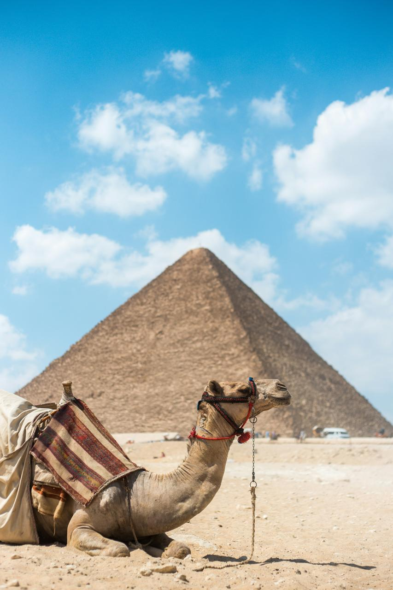

الأهرامات
تعتبر الأهرامات من عجائب العالم السبع القديمة، وهي واحدة من أهم المعالم السياحية في مصر.
تاريخ غني، وأماكن سياحية مشهورة مثل الأهرامات والمتحف المصري.

تعتبر الأهرامات من عجائب العالم السبع القديمة، وهي واحدة من أهم المعالم السياحية في مصر.

يضم المتحف المصري مجموعة كبيرة من الآثار الفرعونية القديمة، بما في ذلك توابيت الملك توت عنخ آمون.

سوق تاريخي في القاهرة، مشهور بالتحف والحرف اليدوية والمنتجات التقليدية المصرية.